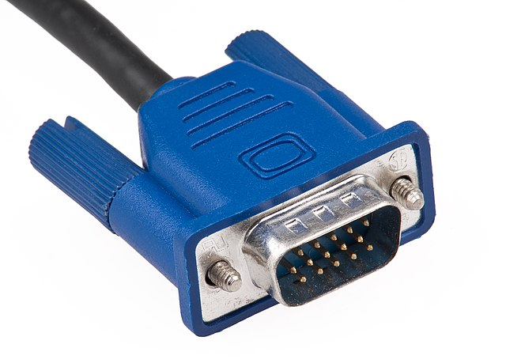
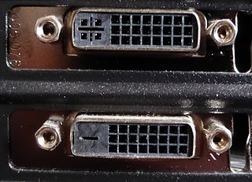
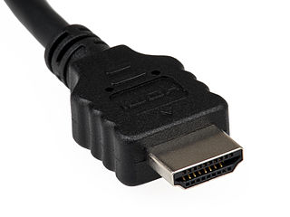

This is an article I had for quite a while as a draft. As part of my yearly cleanup, I've published it without finishing it. It might not be finished or have other problems.
I frequently forget the video display interface names and I wonder why we have that many. So here are the differences.
Comparison
| VGA | DVI | HDMI | DisplayPort | USB-C | |
|---|---|---|---|---|---|
| Introduced in | 1987 | 1999 | 2002 | 2006 | 2014 |
| Digital | No | Yes | Yes | Yes | Yes |
| Audio | No | No | Yes | Yes | Yes |
| Image |  |
 |
 |
Image | Image |
| Designer | IBM based on D-subminiature | Digital Display Working Group | HDMI Founders / Forum | VESA | USB Implementers Forum |
| Color | Blue | White | - | - | - |
| Max. cable length* | 40m | 15m | 5-15m | 15m | 2m |
| Maximum resolution | 1280 × 720 | 2560 × 1600 | 4096 × 2160 (4K) | 7680 × 4320 (8K) | 5120 × 2880 (5K) |
| 3D | No | No | Yes | Yes | ? |
| Size of Connector | Big | Big | Small | Small | Small |
| Good Connection | Yes (screws) | Yes (screws) | No | Yes (like network cables) | Yes (?) |
| Licensing cost | ? | ? | \$10,000 per high-volume manufacturer plus \$0.04 per device | Royalty-free | ? |
| Multiple Monitors (Daisy Chain) | No | No | No | Yes | Yes |
| Connector Types | 1 | 2 | 3 | 2 | 1 |
{kind=link}
{kind=link}
{kind=link}
{kind=link}
{kind=link}
Fine Print
- DVI is in fact not one interface, but at least two. DVI-I (4 pins in a square on the left) and DVI-D (only one long "pin" on the left). DVI-I (integrated) sends an additional analog signal which is missing in DVI-D (digital). This means DVI-I can use simple adapters for VGA.
- HDMI and DisplayPort come in different versions. Older versions only support lower resolutions.
- HDMI has multiple connectors: Type A (standard), Type C (mini), and Type D (micro)
- DisplayPort has two connectors: DisplayPort and Mini DisplayPort
- Philips Brilliance 258B6QUEB supports USB-C
- HDMI seems to be good for home entertainment, whereas DisplayPort is good for PCs. I'm not sure about USB-C ... seems to be too recent.